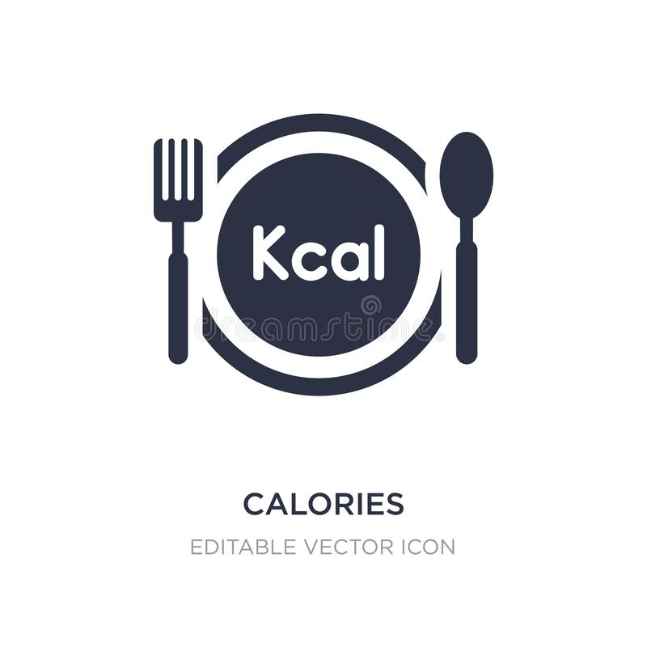

OBESITY
CHILDHOOD STATISTICS

1 IN 3
Children and adolescents
(ages 2-19)
ARE OVERWEIGHT OR OBESE
and almost NONE meet recommended healthy diet and physical activity amount.

Children
An estimated
12.5 MILLION
Children
(ages 5 years or younger), spend
33 HOURS/WEEK
in Child care settings and consume nearly all of their daily calories.
OBESITY IS LINKED TO MORE CHRONIC CONDITIONS THAN:
increasing the risk of more than 20 preventable diseases, including sleep apnea, asthma, heart disease, Type 2 diabetes, osteoarthritis, high blood pressure and high-cholesterol stroke.
Smoking Poverty Drinking
RISK FACTORS gpp_maybe
Childeren in their early teens
who are obese and who
high triglyceride levels have arteries similar to those of
45-year olds.
Obese children as young as age
3 show indicators for
developing heart disease later in life.
Children who are overweight from the ages of 17 to 13 may develop
heart disease as
early as age 25.
Obese children are twice as likely to die before age 55 than their slimmer peers.
FRENCH FRIES
are the most common vegetable
that children eat,comprising
25%
of their vegetable intake.
JUICE
(which may lack important fibre found in whole fruit) makes up
40%
of children's daily fruit intake.
40% - 50% OF
TODDLERS
watch more television than is recommended.
NEARLY 1/2 OF
PRESCHOOLERS
don't get enough physical activity.